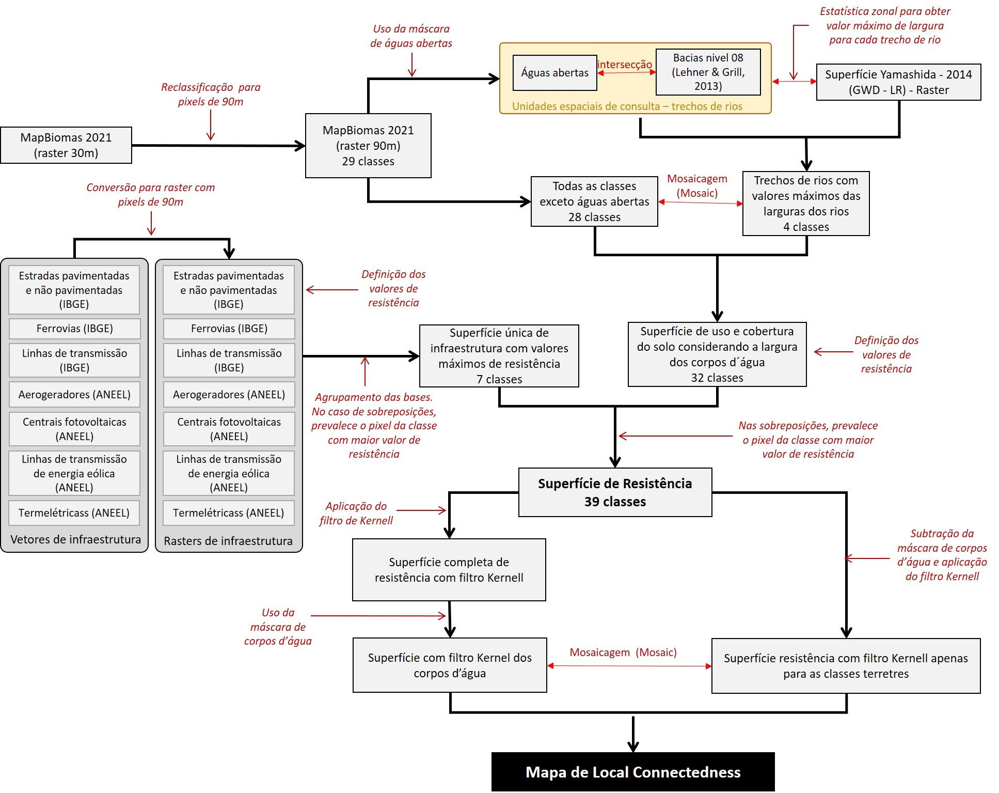

12 Análise de conectividade local
A conectividade local se refere à facilidade de movimentação potencial dos organismos dado o arranjo espacial dos elementos que compõem a paisagem (tipos de uso e cobertura do solo) e a resistência imposta por eles (Tischendorf & Fahrig 2000, Anderson 2014, Kumar & Cushman 2022).
12.1 Bases de dados utilizadas
A superfície de resistência foi calculada usando como base os dados de uso e cobertura do solo fornecida pelo MapBiomas coleção 8.0 para o ano de 2021 (MapBiomas Project 2020). Complementamos essa camada do uso do solo com informações sobre: largura dos rios; infraestruturas de transporte; e infraestruturas de energia. As informações sobre largura dos rios foram derivadas a partir das camadas de águas abertas do MapBiomas (MapBiomas Project 2020), de bacias hidrográficas no nível 8 (Lehner &Grill 2013) e de largura efetiva dos corpos d’água (Yamashida et al. 2014). As informações sobre infraestrutura de transporte foram originadas a partir das camadas de estradas pavimentadas, estradas não-pavimentadas e ferrovias fornecidas pelo Instituto Brasileiro de Geografia e Estatística (IBGE) ([BCIM250, 2021])(https://www.ibge.gov.br/geociencias/cartas-e-mapas/bases-cartograficas-continuas/15759-brasil.html?=&t=downloads). As bases de infraestrutura de energia correspondem às camadas de aerogeradores, centrais geradoras de energia fotovoltaicas, linhas de transmissão de energia eólica e usinas termelétricas fornecidas pela Agência Nacional de Energia Elétrica (ANEEL) (https://gisepeprd2.epe.gov.br/WebMapEPE/) e de linhas de transmissão de energia fornecida pelo IBGE (BCIM250, 2021).
Cálculo de resistência
Os valores de resistência são medidas relativas da dificuldade que os diferentes tipos de uso e cobertura do solo potencialmente conferem à movimentação dos organismos na paisagem. Esses valores foram atribuídos por bioma, seguindo duas premissas: (1) quanto maior for a diferença estrutural entre um dado tipo de cobertura do solo e as fitofisionomias nativas presentes no bioma, maior será o valor de resistência da classe de cobertura do solo; e (2) corpos d’água mais largos oferecem maior resistência ao deslocamento de organismos terrestres na paisagem do que corpos d’água mais estreitos.
As análises de mapeamento das áreas resilientes às mudanças climáticas estão na resolução espacial de 90 m. Desta forma, reamostramos os dados do MapBiomas (MapBiomas Project 2020), da resolução original de 30m para resolução de 90m. Para avaliar o efeito das larguras do rio na movimentação das espécies foi necessário avaliar o tamanho máximo do corpo d’água regionalmente. Para isso, a classe do MapBiomas equivalente a águas abertas (rios, lagos e oceanos) foi subdividida em quatro classes distintas de acordo com a largura dos corpos d’água, já que rios mais largos tendem a ser barreiras mais resistentes à movimentação das espécies (Hayes & Sewlal 2004). Para fazer a divisão, extraímos a máscara de corpos d’água e dividimos essa classe única em pedaços menores, regionalizando suas larguras por trechos. Para cada um desses trechos foi extraída a largura efetiva máxima dos corpos d’água, de margem a margem, usando a base GWD – LR disponibilizada por Yamashida et al. 2014. Os trechos foram agrupados nas seguintes classes de largura: (1) 1 a 250 m; (2) 250 a 1.000 m; (3) 1.000 a 4.000 m; e (4) maiores de 4.000 m.
Cada uma das classes de uso e cobertura do solo do MapBiomas, já incluindo as quatro classes de largura dos corpos d’água, recebeu, por bioma, um valor de resistência baseado nas premissas expostas acima de diferença estrutural entre o uso da terra e o bioma . Os valores de resistência das classes foram atribuídos pela equipe do projeto (Tabela 12.1). Cada camada de infraestrutura de transporte e energia foi convertida do formato vetorial (formato original das bases) para o formato matricial ou raster, com pixels de tamanho aproximado de 90 m. Feita a conversão, os diferentes tipos de infraestrutura receberam valores específicos de resistência (conforme indicado na Tabela 12.1) e todas as camadas foram agrupadas em um único raster de infraestrutura. Os valores de resistência dos distintos tipos de infraestrutura foram atribuídos pela equipe do projeto, separadamente por bioma, e podem ser visualizados na Tabela 12.1.
| N | Classe de cobertura do solo | Amazônia | Caatinga | Cerrado | Mata Atlântica | Pampa | Pantanal |
|---|---|---|---|---|---|---|---|
| 1 | Afloramento rochoso | 3 | 1 | 2 | 3 | 2 | - |
| 2 | Algodão | 7 | 7 | 10 | - | - | - |
| 3 | Aquacultura | - | 10 | 7 | 7 | 7 | - |
| 4 | Área urbana | 20 | 20 | 20 | 20 | 20 | 20 |
| 5 | Áreas alagadas (Campos e Pântanos) | 1 | - | 1 | 2 | 1 | 1 |
| 6 | Arroz | - | - | 10 | 10 | 10 | - |
| 7 | Café | - | 7 | 10 | 4 | - | - |
| 8 | Cana de açúcar | 15 | 10 | 10 | 10 | - | 10 |
| 9 | Citrus | - | - | 10 | 4 | - | - |
| 10 | Dendê | 10 | - | - | - | - | - |
| 11 | Floresta alagada | 1 | - | - | - | - | - |
| 12 | Formação campestre (campos) | 1 | 1 | 1 | 2 | 1 | 1 |
| 13 | Formação de savana | 1 | 1 | 1 | 2 | - | 1 |
| 14 | Formação florestal | 1 | 1 | 1 | 1 | 1 | 1 |
| 15 | Mangue | 1 | 1 | 1 | 1 | - | - |
| 16 | Mineração | 20 | 20 | 20 | 20 | 20 | 20 |
| 17 | Mosaico de usos | 10 | 7 | 10 | 10 | 10 | 7 |
| 18 | Outras áreas não vegetadas | 10 | 10 | 10 | 10 | 10 | 10 |
| 19 | Outras culturas perenes | 10 | 7 | 7 | 4 | - | - |
| 20 | Outras culturas temporárias | 15 | 7 | 10 | 10 | 10 | 5 |
| 21 | Outras formações não florestais | - | 7 | - | 2 | - | - |
| 22 | Pastagem | 17 | 7 | 7 | 9 | 7 | 7 |
| 23 | Praia, duna e areal | 2 | 2 | 2 | 2 | 2 | 2 |
| 24 | Salina (Apicum) | 2 | 1 | 2 | 2 | - | - |
| 25 | Silvicultura (floresta plantada) | 7 | 2 | 7 | 3 | 10 | 5 |
| 26 | Soja | 17 | 10 | 10 | 10 | 10 | 10 |
| 27 | Vegetação de restinga arbórea | - | 1 | - | 1 | 1 | - |
| 28 | Vegetação de restinga herbácea | - | 1 | - | 2 | 1 | - |
| 29 | Corpos d’águas abertas até 250 metros | 2 | 2 | 2 | 2 | 2 | 2 |
| 30 | Corpos d’águas abertas de 250 a 1000 metros | 5 | 5 | 5 | 5 | 5 | 5 |
| 31 | Corpos d’águas abertas de 1000 a 4000 metros | 10 | 10 | 10 | 10 | 10 | 10 |
| 32 | Corpos d’águas abertas acima de 4000 metros | 12 | 12 | 12 | 12 | 12 | 12 |
| 33 | Aerogeradores | 15 | 15 | 15 | 15 | 15 | 15 |
| 34 | Centrais geradoras de energia solar | 15 | 17 | 17 | 17 | 17 | 17 |
| 35 | Estradas não pavimentadas | 10 | 10 | 7 | 10 | 7 | 3 |
| 36 | Estradas pavimentadas | 20 | 20 | 20 | 20 | 20 | 20 |
| 37 | Ferrovias | 10 | 10 | 10 | 10 | 10 | 10 |
| 38 | Linhas de transmissão (tradicionais e anexas ao sistema eólico) | 10 | 7 | 7 | 7 | 7 | 7 |
| 39 | Termelétricas | 20 | 20 | 20 | 20 | 20 | 20 |
A camada com os valores de resistência dos diferentes tipos de uso e cobertura do solo (com base no MapBiomas), já contemplando as classes de largura de corpos d’água, foi combinada com a camada de resistência de infraestrutura de modo que, nas sobreposições entre pixels de classes diferentes, sempre prevalecia o valor do pixel com resistência maior. A combinação dessas camadas deu origem a uma única superfície de resistência que foi utilizada para a construção do mapa de resistência (Figura 13.4).

Filtro kernel
Depois de atribuídos os valores de resistência, aplicamos à superfície de resistência gerada a função kernel de decaimento linear. Esta análise considerou, em uma janela circular móvel de 23 pixels (~2.070 m), o contexto espacial em que cada pixel está inserido, reconhecendo que pixels mais próximos possuem uma influência maior que os mais distantes. Desta maneira, a função kernel auxilia na tarefa de encontrar os melhores caminhos de deslocamento na paisagem, ou seja, aqueles caminhos que oferecem menor resistência potencial à movimentação de espécies, baseados no uso do solo e no contexto local da paisagem (Figura 12.2).

Uma vez que nossas análises são orientadas para organismos terrestres e a função kernel considera o efeito do contexto no cálculo de conectividade local, optamos por, na análise de vizinhança, desconsiderar o efeito que os pixels de água exercem sobre os pixels terrestres, mas mantivemos o efeito contrário. Em termos práticos isso significa que o custo de deslocamento de um organismo terrestre em um pixel de floresta primária, por exemplo, que esteja localizado na margem de um corpo d’água mais largo, não deve ser maior que o custo de deslocamento num pixel de floresta que esteja localizado na margem de um corpo d’água estreito. Por outro lado, se um pequeno corpo d’água estiver inserido em uma área de baixa resistência, como uma formação florestal, ele terá valores de conectividade local maiores do que se estivesse inserido em uma área de alta resistência, como uma pastagem, por exemplo. O fluxograma ilustrando as etapas da análise de conectividade local é apresentado na Figura 12.3.
